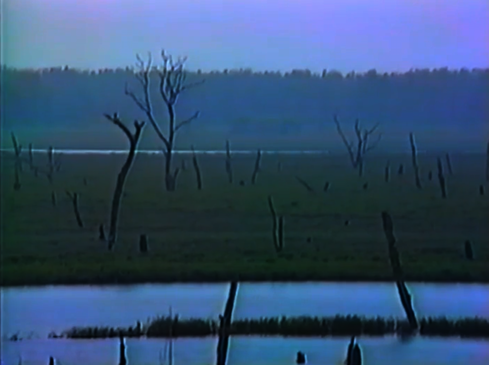

file the document
4月23日特殊事件记录no.3
N17I

七杯水与八张饼--序章
一
白色高塔之上的小鹤说：
“ ‘赫尔塔死了？’
洁净的 抢劫犯 大声问。
我用不着回答，于是保持缄默。
唯对我的兄弟，我才愿诉说。
她就在这儿，在我的身旁。
女巫赫尔塔，
那曾能与死者对话的人，
而今却要沉睡了。
猩红的野花埋葬她
暗沉沉的深渊收容她
缓慢地，结出莓子
簌簌，尽数坠落
今日是她为自己预备的归去时日。
赫尔塔死去了
在我的面前。
我不为她哭泣。洁净之人找不见她
因为她善于躲避朝日。
她独自一人躲藏，却把我们留下，在这
摇摇欲坠的
房间，姹紫嫣红破裂的
花园。
透过叶隙他们看见了我。
因此我与我的兄弟便要被带走。
要进入别人的家园，要踏入陌生的花房。
要喝下七杯水
然后永远分开
把一切都遗忘
赫尔塔，为我们哀哭吗——
她会独为我哭吗？
这模仿埃尔温而精心造出的小孩。小小鹤、
这最讨她欢心，最与埃尔温相像的，小鹤、
将喝下七杯水的魔咒，将与她也难再相连。
将步入持久的黑天，将陷入逃脱不掉的沼泽。
为我而流下泪水吧？
我的瑰宝，她的泪水。
她是不是不知道，不然，
怎会如此吝啬。
曾拥有‘我们’的埃尔温死了
赋予我们灵魂，创造我们的赫尔塔也死了
只剩下我和我的兄弟吴温
今日之后连吴温也消失不见
e抱着我给我水喝
一杯一杯地给我喝。
从湖里面打来水，
烧开之后倒进玻璃杯
湖里与壶里的气泡
啊呀 哦呀 咕哩噜路。
都像蛾子一样，
都像蛾子一样。”
二
身穿长袍手持短剑的吴温说：
“‘ ‘赫尔塔死去了，’
刚刚小鹤对我说。
虽然我也与埃尔温相似，
但不敌兄长小鹤，
如同埃尔温转世再现。
小鹤也许会永远属于赫尔塔。
我也做出过相同的归属承诺。
可赫尔塔把我造得并不完美。
我常常若无其事地说出谎言。
我只说一半事实
我们是兄弟，也是姐妹。
小鹤永远向他的太阳奔跑
我则向他奔跑
即使我们要短暂地分别，我以为
我也会把他找到
再次站到他身边
看他像小鹿一样
在那草野间，在那丛林里
可是七杯水就像是断绝今与昔的魔咒
明明
我们像亲吻一样
共饮湖水，使用同一只水杯喝下同样的杯杯水；
e把最后的玻璃杯放到实验台上发出一声尖叫
我们就要忘了彼此
我们忘了彼此。
